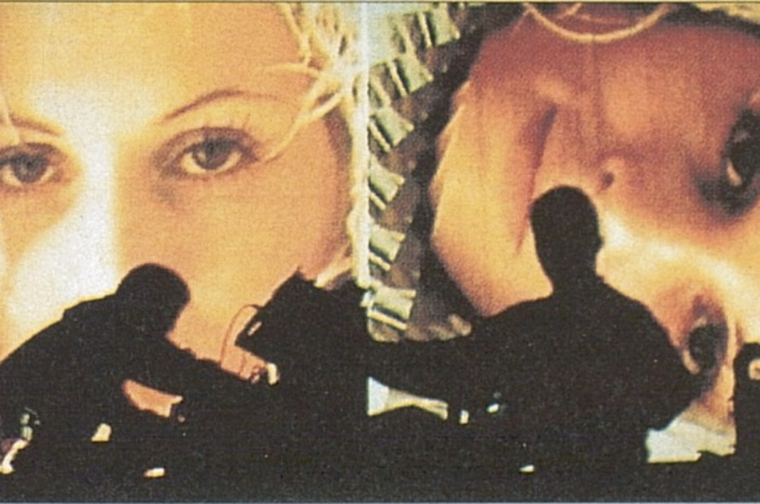

01 / The Homework era
Daftendirektour 1997
Touring behind Homework, Thomas Bangalter and Guy-Manuel de Homem-Christo brought their early sound to the stage: drum machines, looping grooves, and a direct connection to the dance floor. The photograph captures the duo in silhouette during their Southampton show.
The period is preserved on Alive 1997, recorded at the Que Club in Birmingham and released in 2001.